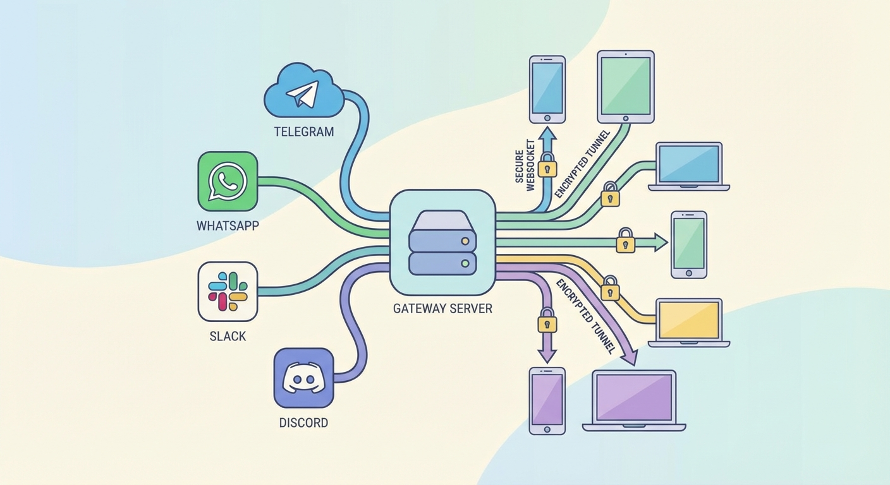

단락 요약(Lead): OpenClaw의 Gateway는 모든 메시징 채널을 통합·관리하는 중앙 컴포넌트입니다. 이 글은 Gateway의 구성 요소, 프로토콜, 페어링/보안, 운영 관행을 실무 관점에서 정리합니다.
2026 02 01 Openclaw Gateway Architecture Overview
단락 요약(Lead): OpenClaw의 Gateway는 모든 메시징 채널을 통합·관리하는 중앙 컴포넌트입니다. 이 글은 Gateway의 구성 요소, 프로토콜, 페어링/보안, 운영 관행을 실무 관점에서 정리합니다.
개요
OpenClaw의 Gateway는 단일 장기 실행 프로세스로서 WhatsApp(Baileys), Telegram(grammY), Slack, Discord, Signal, iMessage, WebChat 등 다양한 메시징 표면을 소유하고 관리합니다. 제어 평면 클라이언트(예: macOS 앱, CLI, 웹 UI, 자동화)는 WebSocket을 통해 Gateway에 연결하며, 노드(디바이스)는 role: node로 연결해 명시적 권한과 명령을 제공합니다. 호스트당 하나의 Gateway만 존재하며, WhatsApp 세션은 Gateway에서만 열립니다.
구성 요소
Gateway (데몬)
- 공급자(provider) 연결 유지
- 타입화된 WebSocket API(요청/응답/서버 푸시 이벤트) 제공
- 수신 프레임을 JSON Schema로 검증
agent,chat,presence,health,heartbeat,cron등 이벤트 방출
클라이언트 (mac 앱 / CLI / 웹 관리자)
- 클라이언트당 하나의 WS 연결 유지
health,status,send,agent,system-presence등 요청 전송tick,agent,presence,shutdown등 이벤트 구독
노드 (macOS / iOS / Android / headless)
- role:
node로 connect - 디바이스 아이덴티티 제출 및 디바이스 기반 페어링
canvas.*,camera.*,screen.record,location.get등 원격 명령 노출
프로토콜 핵심
- 전송: WebSocket (텍스트 프레임, JSON 페이로드)
- 첫 프레임은 반드시
connect - 메시지 형식
// Requests
{ "type": "req", "id": "...", "method": "...", "params": {...} }
// Responses
{ "type": "res", "id": "...", "ok": true, "payload": {...} }
// Events
{ "type": "event", "event": "...", "payload": {...}, "seq": 123 }
- 인증:
OPENCLAW_GATEWAY_TOKEN(또는--token)이 설정되면connect.params.auth.token이 일치해야 연결 허용 - 재시도/중복제거:
send,agent같은 부작용을 일으키는 메서드는 idempotency 키 필요; 서버는 짧은 중복 제거 캐시 유지
페어링 및 보안
- 모든 WS 클라이언트는 연결 시 디바이스 아이덴티티 포함
- 신규 디바이스는 페어링 승인 필요; Gateway가 디바이스 토큰을 발행
- 로컬 연결(loopback 또는 같은 tailnet 주소)은 자동 승인 가능
- 원격 연결은
connect.challengenonce 서명 및 명시적 승인 필요
실무 팁
원격 관리를 위해 Tailscale 또는 VPN을 권장합니다. SSH 터널(예: ssh -N -L 18789:127.0.0.1:18789 user@host)은 대안이지만, TLS와 핀닝을 통해 보안을 보강하세요.
운영
- 시작:
openclaw gateway(포그라운드; 로그는 stdout) - 헬스 체크: WebSocket을 통한 health 엔드포인트 및
hello-ok페이로드 포함 - 감독:
launchd또는systemd로 자동 재시작 구성
불변 조건(Important Invariants)
- 한 호스트당 정확히 하나의 Gateway가 Baileys 세션을 제어합니다.
- 핸드셰이크는 필수입니다. 비-JSON 또는 첫 프레임이
connect가 아니면 연결 강제 종료됩니다. - 이벤트는 재생되지 않으므로 클라이언트는 갭이 발생하면 상태를 갱신해야 합니다.
참고 문서
- 원문: Gateway Architecture — OpenClaw docs
(이 글은 OpenClaw 문서의 'Gateway Architecture' 항목을 한글로 번역·정리한 것입니다.)